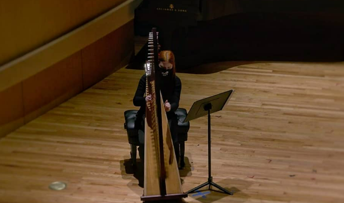

Framework III is third in a series of short procedurally generated pieces for varying instrumentation. The harp is retuned to simulate a large collection of pitches which are derivative of a C harmonic series. This broad harmony is revealed to the listener gradually and never all at once. The distribution of each pitch is carefully controlled (as if each pitch were an instrument). Gestures were drawn from their haphazard relationships in time.
03.22.21 . 8:30pm CDT . Spectrum II . Recital Hall, College of Music, University of North Texas . 415 Ave C, Denton, TX . US
Raquel Coleman, Harp
Raquel Coleman, performing